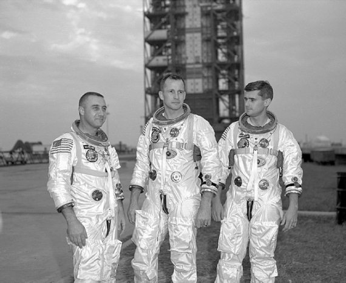
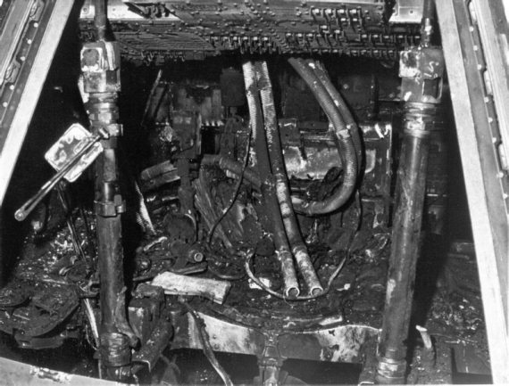
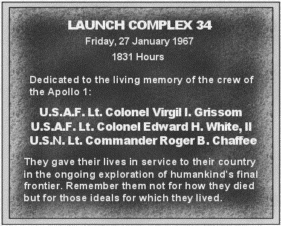

Пожар на мысе Канаверал
Американскую программу «Аполлон» многие считают самым грандиозным и самым удачным инженерным мероприятием ХХ века. Всего за восемь лет, если считать от исторической речи президента США Джона Кеннеди о необходимости высадки человека на поверхность Луны, специалистам американского аэрокосмического агентства удалось разработать, испытать, изготовить и отправить в полет космический корабль, с помощью которого осуществилась извечная мечта человечества о межпланетных полетах.
Удивительно, но, несмотря на грандиозный объем работ и на технические сложности, с которыми пришлось столкнуться инженерам, все полеты завершились успешно. Даже аварийный полет космического корабля «Аполлон-13», о котором речь пойдет в одной из следующих глав, следует считать успешным. Хотя тогда и не удалось высадиться на Луну, но все астронавты остались живы и без ущерба своему здоровью вернулись домой. Эта миссия продемонстрировала как надежность созданной техники, так и отменную подготовку экипажа.
Самой большой трагедией программы «Аполлон» стал пожар 27 января 1967 года, когда во время наземной тренировки на стартовой площадке космодрома на мысе Канаверал погибли Вирджил Гриссом, Эдвард Уайт и Рождер Чаффи (Roger Chaffee), которым спустя месяц предстояло отправиться в первый испытательный рейс на околоземную орбиту.
К этому моменту, благодаря десяти экипажам кораблей «Джемини», успешно отлетавшим в космосе в 1965–1966 годах, Соединенные Штаты стали безусловным лидером в пилотируемом освоении космоса. Казалось, еще одно усилие – и Луна «в кармане». Однако это только казалось. Уровень разработок в рамках лунной программы оставлял желать лучшего. Главные претензии исходили от астронавтов, которым пришлось столкнуться с чрезвычайно низким качеством работ при изготовлении опытных образцов командных модулей. Недостатки стали проявляться уже на Земле, а этим «образцам» предстояло еще отправиться в космос.
Американцы очень спешили. Сейчас известна причина этой торопливости. Главный конкурент в освоении космоса – Советский Союз – не сидел без дела и имел свои планы в гонке за лидерство.
Штурмовщина при создании «Аполлона» была ужасающей. Число изменений конструкций узлов и агрегатов исчислялось тысячами. Едва инженеры успевали что-то перепаять, что-то перемонтировать, как из конструкторских отделов к ним поступали новые чертежи, перечеркивающие все только что сделанное. Бывало, что новые схемы рисовались от руки прямо в сборочных цехах и по ним тут же начинали работать. Не было практически никакого контроля, внесенные изменения не учитывались штатной документацией.
Сегодня, когда все уже позади, и мы знаем, чем завершилась программа «Аполлон», только диву даешься, что все обошлось столь малой кровью. Хотя итог мог быть гораздо более трагичный. И предчувствие надвигающейся катастрофы было у многих. Но от него отмахивались, как от надоедливой мухи. «Только пустите нас на борт, и мы полетим на том, что есть», – говорили астронавты.
Запланированная на 27 января тренировка не была самой последней для экипажа «Аполлона-1», но ожидалось, что в процессе будут получены ответы на многие вопросы по конструкции корабля и функционированию бортовых систем, в которые было внесено много изменений. Инструкция по действиям в нештатных ситуациях, которую астронавты получили перед испытаниями, насчитывала 213 страниц. В ней было предусмотрено практически все, – от неуклюжего движения одного из членов экипажа до выхода из строя системы энергопитания, от потери кораблем ориентации до отказа двигателя. Не было в ней только одного – как будут спасаться астронавты в случае пожара на корабле. Никто даже не предполагал, что такое может случиться, поэтому и обошли этот вопрос молчанием.

Астронавты Вирджил Гриссом, Эдвард Уайт и Роджер Чаффи перед началом тренировки
В экипаж корабля «Аполлон-1» входили трое.
Командиром был 40-летний ветеран американской космической программы, полковник ВВС Вирджил Гриссом. К моменту назначения в экипаж, он уже имел опыт двух космических полетов: в 1961 году вторым из американцев совершил «прыжок» в космос на космическом корабле «Меркурий», а в 1965 году испытывал первый пилотируемый двухместный корабль «Джемини– 3».
Среди своих коллег Вирджил, или Гас, как его называли друзья и сослуживцы, имел репутацию сильного лидера и достаточно грубого человека, что многих заставляло держаться от него на расстоянии. Но ему нельзя было отказать в смелости, честности и прямоте. Еще во времена программы «Джемини» он как-то сказал своей жене: «Если во время полетов произойдет что-то трагичное, то это будет со мной». Понимая опасность, Гриссом, тем не менее, всегда стремился в космос. Его амбиции простирались гораздо дальше, чем полет на «Аполлоне-1». Многие считают, что, останься Гриссом жив, именно ему доверили бы первую высадку на Луну. Но так говорят сейчас, когда известно, что первым стал Нейл Армстронг и никто этого первенства уже не сможет у него отнять. Впрочем, почему бы не пофантазировать, коль есть такая возможность.
Гриссом был одним из тех, кто знал обо всех проблемах на борту корабля. Но он также был одним из тех, кто настаивал, чтобы испытательный полет состоялся в запланированные сроки. Астронавт надеялся на свой опыт и на то, что присутствие экипажа на борту поможет решению многих проблем. Для этого были основания: в обоих своих предыдущих полетах Гриссом оказывался в чрезвычайных ситуациях, но выдержка и мужество позволяли ему выходить победителем. Он думал, что так будет всегда.
Заблуждался ли он? Да. Но только отчасти. Опыт многих космических экспедиций показал в дальнейшем, что человек способен найти выход, казалось бы, из безвыходных ситуаций. Если бы решения всегда оставалось за автоматическими системами, то гораздо больше экипажей не вернулось бы из космоса. Однако даже человек не всегда может спасти гибнущий корабль.
Вторым членом экипажа «Аполлона-1» являлся тридцатишестилетний подполковник ВВС Эдвард Уайт. В НАСА он пришел на три года позже своего командира, но в 1965 году стал первым американцем, вышедшим в открытый космос. Высокорослый, обладавший прекрасной физической формой, он с удовольствием принимал все почести, которые выпали на его долю после полета. Он, как и Гриссом, так же мечтал о полете к Луне, и так же делал все возможное для реализации своих честолюбивых планов.
Рождер Чаффи – 31-летний третий член экипажа – был не только самым молодым, но и единственным, не имевшим опыта космических полетов. Улыбчивый, обаятельный. Его по-настоящему любили в отряде НАСА. Мечтой о полете в космос он заболел сразу же после первых рейсов на орбиту и сделал все, чтобы быть зачисленным в НАСА. Ну а после включения в программу «Аполлон» просто «заболел» Луной, увесив весь свой дом фотографиями ночного светила.
В теплое январское утро Гриссом, Уайт и Чаффи прибыли на тридцать четвертую площадку космодрома и поднялись в кабину корабля, установленного наверху ракеты-носителя «Сатурн-1В». Тренировка предполагала «прогон» четырех предстартовых и трех послестартовых часов будущего полета. Запланированные испытания не считались опасными, так как проходили на незаправленной ракете, но их начало было задержано на час из-за странного запаха, напоминавшего запах кислого молока. Источник его так и не нашли, но планы менять не стали. Все та же гонка.
Сейчас кажется, что многие случайности, которые произошли в тот день, были своеобразными предупреждениями астронавтам. Например, сбои связи между бортом корабля и командным пунктом в нескольких сотнях метров от стартовой площадки. Именно тогда из уст Вирджила Гриссома, раздраженного плохой слышимостью, вырвались слова, ставшие впоследствии крылатыми: «Боже, как мы собираемся лететь к Луне, если не можем разговаривать между двумя зданиями?». Тем не менее тренировка продолжалась, хотя обратный отсчет пришлось несколько раз прерывать.
Все произошло в 18 часов 31 минуту 4 секунды по местному времени, когда из динамиков раздался резкий возглас: «Пожар!». Впоследствии удалось установить, что это был голос Роджера Чаффи. В центре управления полетом руководитель отряда астронавтов НАСА Дональд Слейтон бросил взгляд на монитор и увидел там пляшущие в кабине корабля языки пламени.
Дальнейшие события развертывались с невероятной скоростью. Через секунду Уайт четко и раздельно доложил: «У нас пожар в кабине!». А еще через семь секунд кто-то из членов экипажа (кто именно, так и не удалось установить) прокричал в микрофон: «У нас сильный пожар! Мы горим!». Еще несколько секунд из динамиков раздавались крики боли, скрежет и удары – экипаж пытался вырваться из ловушки, в которой оказался. Через семнадцать секунд после первого сообщения в кабине «Аполлона-1» все смолкло. В 18 часов 31 минуту 22,4 секунды связь с кабиной оборвалась. А в 18 часов 31 минуту 30 секунд обшивка корабля треснула, и через образовавшуюся щель наружу устремились раскаленные струи ядовитого газа.
Расшифровка записей телеметрической информации позволила с точностью до секунды зафиксировать все события, сопровождавшие пожар в кабине «Аполлона-1». Были зарегистрированы колебания корабля, что свидетельствовало о судорожных движениях астронавтов в огненной ловушке, резкие скачки температуры, повышение давления и другие данные, которые впоследствии позволили восстановить картину трагедии. Но никто не сможет сказать, что чувствовали астронавты при этом, какими были их последние мысли.
Командам спасателей потребовалось около пяти минут, чтобы вскрыть люк корабля – обшивка раскалилась и не позволяла людям даже приблизиться к кораблю. Но к тому моменту, когда они проникли внутрь, спасать уже было некого. Взору спасателей открылась страшная картина – сильно обгоревшие тела трех членов экипажа, застывшие в тех позах, в которых их застала смерть. Чаффи так и сидел в своем кресле, не успев отстегнуть привязные ремни. Гриссом и Уайт, как более опытные, смогли это сделать, но не смогли предпринять что-то для своего спасения. Тела были настолько изуродованы огнем, что медикам пришлось потратить немало усилий для их идентификации.
Немаловажная деталь, о которой почти никто уже не помнит. Во время вскрытия кабины двадцать пять членов спасательной команды получили сильные отравления угарным газом. Многие из них впоследствии испытывали серьезные проблемы со здоровьем. Но даже те, для кого все закончилось благополучно, на всю оставшуюся жизнь сохранили в памяти запах пожара и смерти.
Пожар на «Аполлоне-1» произошел на Земле, а не где-то в открытом космосе. Это позволило конструкторам определить причины трагедии и выяснить нюансы происшедшего.
Всему виной стала атмосфера внутри корабля. Если в Советском Союзе с самого первого «Востока» внутри был обыкновенный воздух, то американцы использовали чистый кислород. А это, как известно, хорошая подпитка для любого пожара, если он, не дай бог, возникнет.
Решение об использовании кислородной атмосферы было принято по многим соображениям. Как известно, работоспособность человеческого организма увеличивается при избытке кислорода. Кроме того, были технические особенности конструирования замкнутых систем, при которых предпочтительнее заполнение внутренних объемов корабля кислородом и азотом, нежели сложной смесью газов, образующих обыкновенный воздух. Да и системы жизнеобеспечения, использовавшиеся на «Меркурий» и «Джемини» были кислородные, что позволяло не заниматься разработкой новых систем, а использовать уже имевшиеся. Поэтому об опасности думали меньше всего, надеясь на другие средства спасения экипажа в чрезвычайных ситуациях.
Что конкретно стало причиной пожара в кабине «Аполлона-1», так и осталось неизвестным. На борту было множество легковоспламеняющихся предметов, и какой из них загорелся, установить не удалось. Возможно, что все произошло из-за искрения в одной из электросхем. Тем более что в 18 часов 30 минут 55 секунд, то есть за девять секунд до первого сигнала о пожаре, был зафиксирован кратковременный сбой в электропитании. Еще через шесть секунд телеметрия зарегистрировала кратковременное падение напряжения в цепи системы терморегулирования, что характерно для мгновенного разряда и возникновения искры, предположительно, в поврежденном кабеле под люком, ведущим к блоку гидроокиси лития в левом нижнем отсеке оборудования.

Так выглядела кабина корабля после пожара
А теперь вопрос, который задается всегда, когда происходит трагедия: «А можно ли было спасти людей в сложившейся ситуации?».
Анализ конструкции кораблей типа «Аполлон» образца 1967 года дает однозначный ответ: «Нет». Кабина была спроектирована таким образом, что лишала экипаж всех надежд на спасение.
Во-первых, астронавты были закреплены в креслах в очень ограниченном объеме, что не позволяло им быстро получить свободу действий и приступить к борьбе за собственную жизнь.
Во-вторых, у скафандров членов экипажа не было автономных систем жизнеобеспечения, что уменьшило время их борьбы с огнем. Все трубки, подающие кислород в скафандры, крепились наверху кабины, где атака пламени была самой значительной.
В-третьих, отсутствовали средства аварийного открывания люка, например, пиропатроны, что не позволяло провести экстренную эвакуацию.
В-четвертых, даже если бы экипаж смог покинуть кабину корабля, отсутствовали средства эвакуации с верхней площадки носителя.

Памятная табличка в память астронавтов «Аполлона-1»
Это уже потом, при полетах следующих «Аполлонов», сверху донизу протянули 150-метровый рукав, позволявший астронавтам в экстренных случаях за несколько секунд «домчаться» до бетонного бункера, который должен был спасти их, если бы авария случилась на старте.
Кроме вышеперечисленных причин, возможности экипажа «Аполлона-1» на спасение были ограничены еще и местом предполагаемого возгорания. Если пожар возник за креслами астронавтов, то в течение нескольких секунд они могли просто не подозревать о грозящей им опасности. Ну а потом было уже поздно что-либо делать.
Гибель экипажа «Аполлона-1» задержала реализацию американской лунной программы на полтора года. Первый испытательный полет по околоземной орбите состоялся лишь в октябре 1968 года и был успешен. Ну а спустя всего два месяца «Аполлон-8» уже летел к Луне, неся на своем борту Фрэнка Бормана, Джеймса Ловелла и Уильяма Андерса. Еще через семь месяцев Нейл Армстронг и Эдвин Олдрин первыми из землян ступили на поверхность нашего спутника. Они доставили на Луну памятные медали в честь тех, кто отдал свои жизни ради покорения космоса. Тогда их было пятеро, чьи имена увековечили на поверхности другого небесного тела: советские космонавты Владимир Комаров и Юрий Гагарин, и экипаж «Аполлона-1».
Сейчас в Солнечной системе можно встретить и другие напоминания об экипаже «Аполлона-1». Три астероида, летящие между орбитами Марса и Юпитера, носят имена Вирджила Гриссома, Эдварда Уайта и Роджера Чаффи. В январе 2004 года в кратере Гусева на поверхности Марса три холма получили свои названия в честь астронавтов, погибших во время пожара на мысе Канаверал. Все это означает только одно – их гибель не была напрасной. Они знали, на что идут, и прошли выбранный путь до конца. Как и подобает настоящим героям.